Things to do in Chikmagalur
Hills, waterfalls and temples around Chikkamagaluru, with distances from our hotel in town.
Stay in town at Hanuman Heritage on Jyothinagar Main Road and the hills, falls and temples below are all a day trip away.
Last updated 22 November 2026. Distances are approximate road distances from Chikkamagaluru town and depend on your route; check road and weather conditions before you go.
Hills and viewpoints
For a short outing, choose Mullayanagiri and Baba Budangiri. For an overnight trip, Kemmangundi or Kudremukh may suit you.
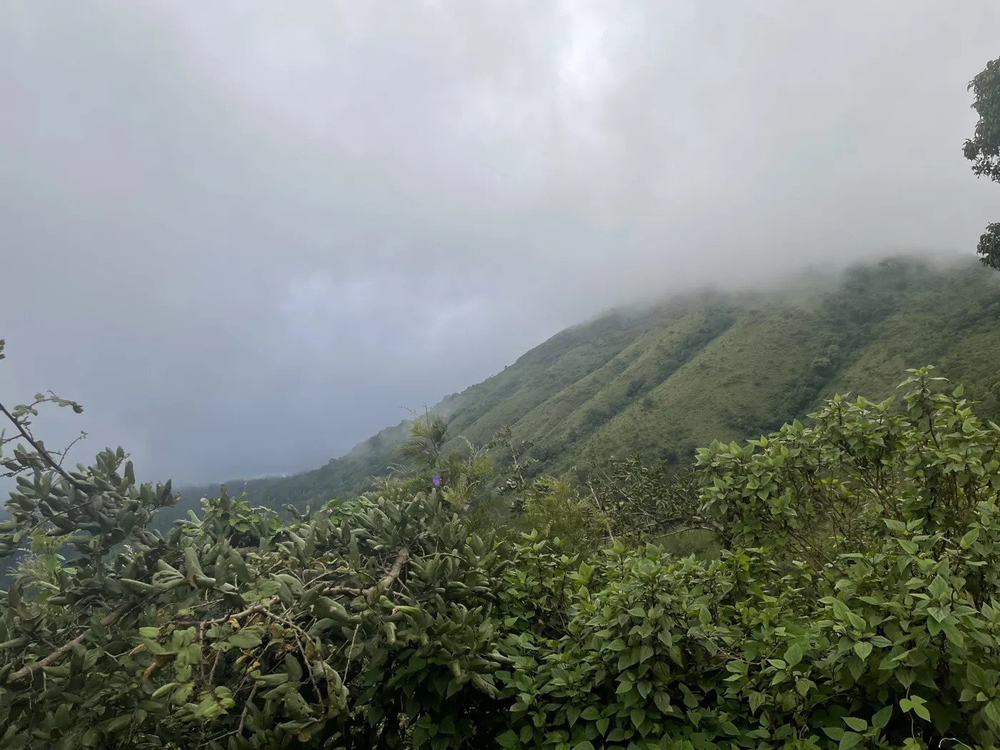
Mullayanagiri
16–20 kmKarnataka's highest peak, about 1,930 m, with views across the Western Ghats. Park and walk up the last steps.
Online vehicle pass needed
Book the vehicle pass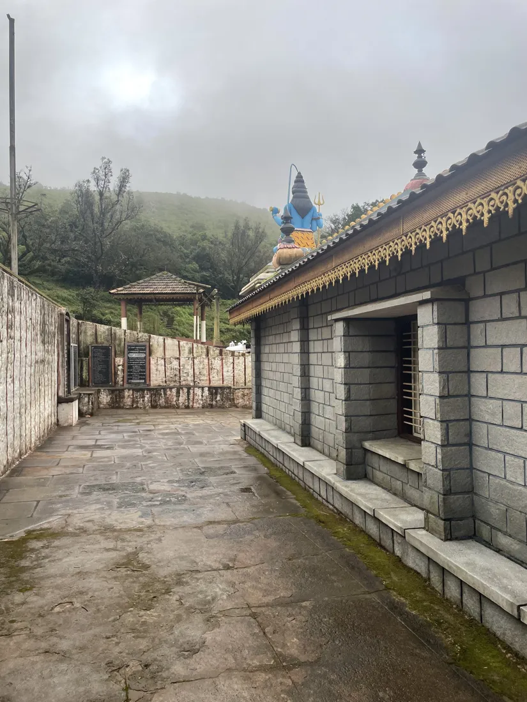
Seethalayanagiri
about 19 kmHilltop temple and viewpoint on the road to Mullayanagiri. Stop here on the way up.
Baba Budangiri and Dattatreya Peetha
30–35 kmMountain range with viewpoints, caves and the Dattatreya Peetha shrine. Coffee in India is said to have started here.
Online vehicle pass needed
Book the vehicle passHirekolale Lake
about 10 kmA calm lake ringed by hills and coffee estates. The easiest evening trip from the hotel.
Best at sunset
Kemmangundi
55–60 kmHill station with gardens and the Z Point viewpoint, close to Hebbe, Shanti and Kalhatti falls.
Half-day or full-day trip
Kudremukh
about 95 kmMountain and national park known for treks through grassland and shola forest.
Trek booking needed in advance
Devaramane
near MudigereA quieter hill area with open views and the Kalabhairaveshwara temple close by.
Kalasa and Horanadu
about 95 kmWestern Ghats towns surrounded by hills, visited for their temples and scenery.
Good as a full-day trip
Ballalarayana Durga Fort
near KalasaHilltop fort reached by a trek through forest and grassland.
Check trail access and weather first
Kyathanamakki Hills
near KalasaWide hilltop views, usually reached by jeep. Plan it as a day trip from the Kalasa–Horanadu side.
Waterfalls
For an easy outing from town, go to Jhari and Manikyadhara. For a longer nature trip, try Kemmangundi with Hebbe or Kalhatti. Falls are fullest during and after the monsoon, when trails can be slippery, so check local access before leaving.
Jhari Falls
22–24 kmAlso called Jerry Falls. A waterfall in the coffee estates near Baba Budangiri; the last stretch is by local jeep.
Pair with Manikyadhara
Manikyadhara Falls
near Baba BudangiriA small fall near the Dattatreya Peetha, often combined with Jhari Falls on the same outing.
Hebbe Falls
about 8 km from KemmangundiA tall fall reached by forest jeep or on foot from Kemmangundi.
Pair with Kemmangundi
Shanti Falls
KemmangundiA short walk in the Kemmangundi area, usually seen with the hill station and Z Point.
Kalhatti Falls
near KemmangundiWaterfall with a temple right beside it.
Hanumana Gundi Falls
Kudremukh sideIn the Kudremukh National Park area; a longer drive from town.
Kadambi Falls
Kudremukh sideAlso near Kudremukh, so best paired with that side of the district.
Temples in and around Chikkamagaluru
From Hiremagaluru, 2 km from the hotel, to the Hoysala temples of Belur and Belavadi and the pilgrim towns of Horanadu, Kalasa and Sringeri.
Sri Kodandaramaswamy Temple, Hiremagaluru
about 2 kmAn easy stop right next to town.
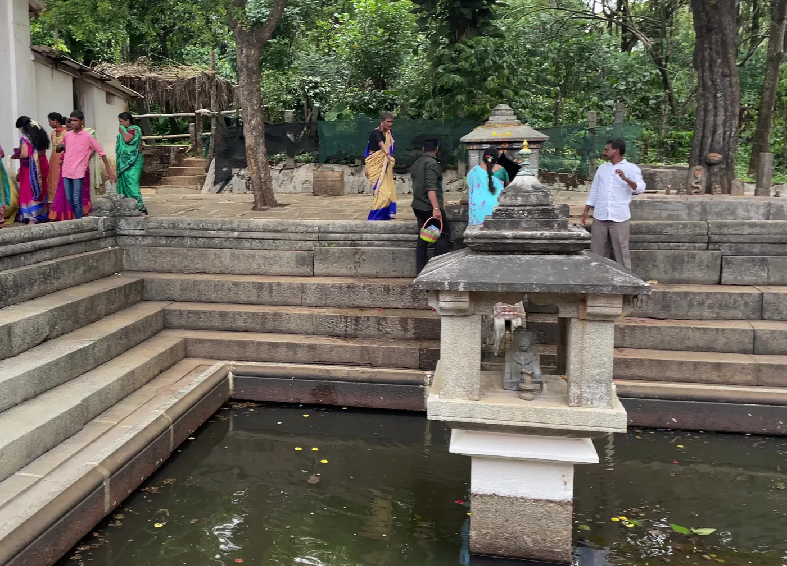
Sri Nirvanaswamy Mutt, Kaimara
KaimaraA peaceful mutt with an old stone-stepped temple tank surrounded by trees.
Chennakeshava Temple, Belur
about 25 kmFamous Hoysala temple with detailed stone carving. Halebidu is a short drive further.
Half-day trip
Veeranarayana Temple, Belavadi
about 30 kmA notable Hoysala temple on the district’s suggested temple route.
Amruteshvara Temple, Amruthapura
north of townKnown for its Hoysala architecture.
Kalabhairaveshwara Temple, Devaramane
about 30 kmA scenic hill-country temple near Mudigere.
Subramanya Temple, Gonibeedu
via AngadiNear the Hemavathi river, on the district’s suggested route through Angadi.
Kalaseshwara Temple, Kalasa
about 95 kmOften visited together with Horanadu.
Annapoorneshwari Temple, Horanadu
10 km from KalasaA major pilgrimage temple in the Western Ghats.
Sharadamba and Vidyashankara Temples, Sringeri
farther outA popular pilgrimage. The district’s suggested itinerary pairs Sringeri with Kalasa and Horanadu.
Full-day trip
Mullayanagiri and Baba Budangiri: the online pass
Since 1 September 2025 every vehicle going up to Mullayanagiri and Baba Budangiri needs an online pass, booked on the Chikkamagaluru tourism booking page. There are two slots a day, 6 am to 12 noon and 1 pm to 6 pm. When the rule started, fees were ₹50 for a bike, ₹100 for a car and ₹200 for a tempo traveller.
- Book your slot the day before, especially for weekends and holidays.
- The road near the top is narrow and steep, with no room for two vehicles to pass in places. Drive slowly and use low gear.
- You cannot drive to the summit; you walk up the steps from the parking area.
- Carry water and a light jacket. Mist and wind are common, and there are no shops at the top.
A 2-day plan
- Day 1 morning: leave early for Seethalayanagiri and Mullayanagiri in the 6 am slot, before the mist and crowds.
- Day 1 afternoon: continue to Baba Budangiri, then Jhari and Manikyadhara falls.
- Day 1 evening: sunset at Hirekolale Lake, back to the hotel for dinner in town.
- Day 2: drive to Kemmangundi, walk to Z Point, and take a jeep to Hebbe Falls. Or, for temples instead, visit Belur and Belavadi.
How to reach Chikkamagaluru
- By road: about 240–250 km from Bengaluru, roughly 5 hours by car. KSRTC and private buses run from Bengaluru, Mysuru and Mangaluru.
- By train: Chikkamagaluru has its own station with trains from Bengaluru (Yesvantpur). Kadur and Birur, about 40–47 km away, have more trains.
- By air: the nearest airport is Mangaluru, about 150–170 km away. Bengaluru airport is the other option.
Best time to visit
September to February has cool, clear weather and is the most popular time; December and January mornings are misty and cold, so pack a sweater. June to September is the monsoon: the waterfalls are at their fullest, but hill roads can be slippery.
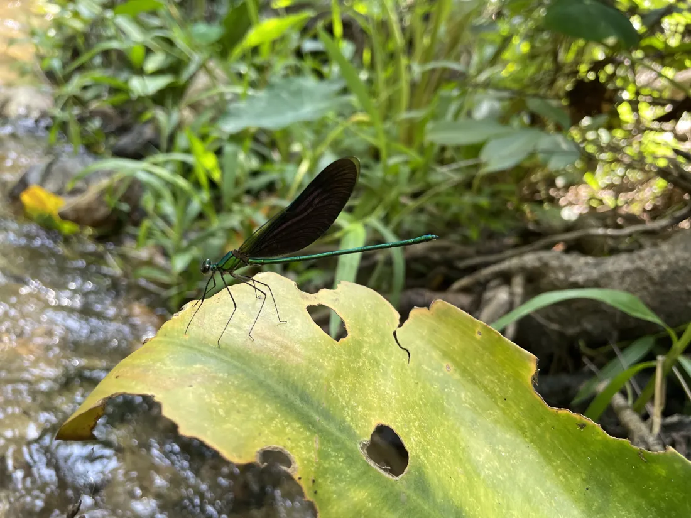
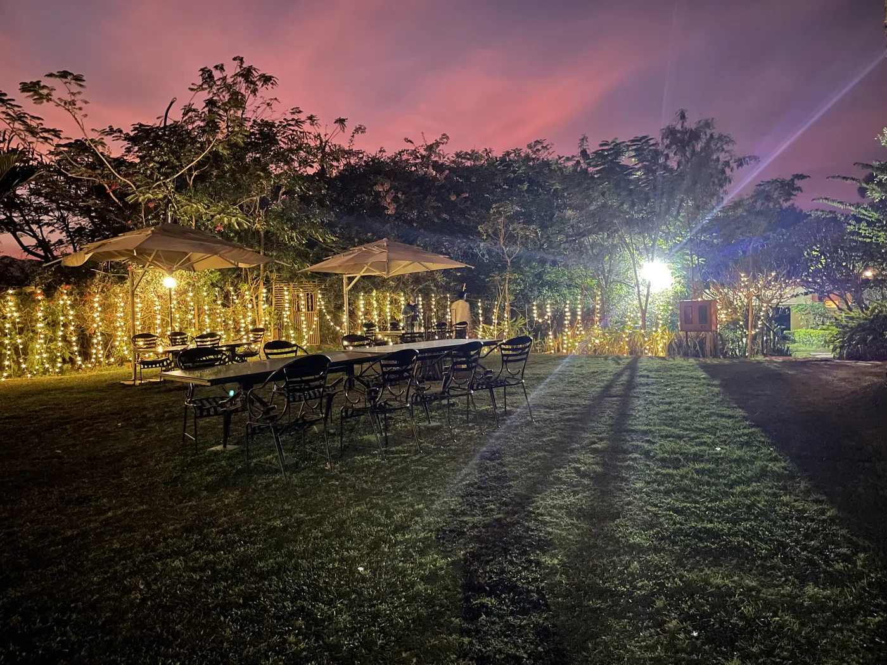
Stay in town at Hanuman Heritage
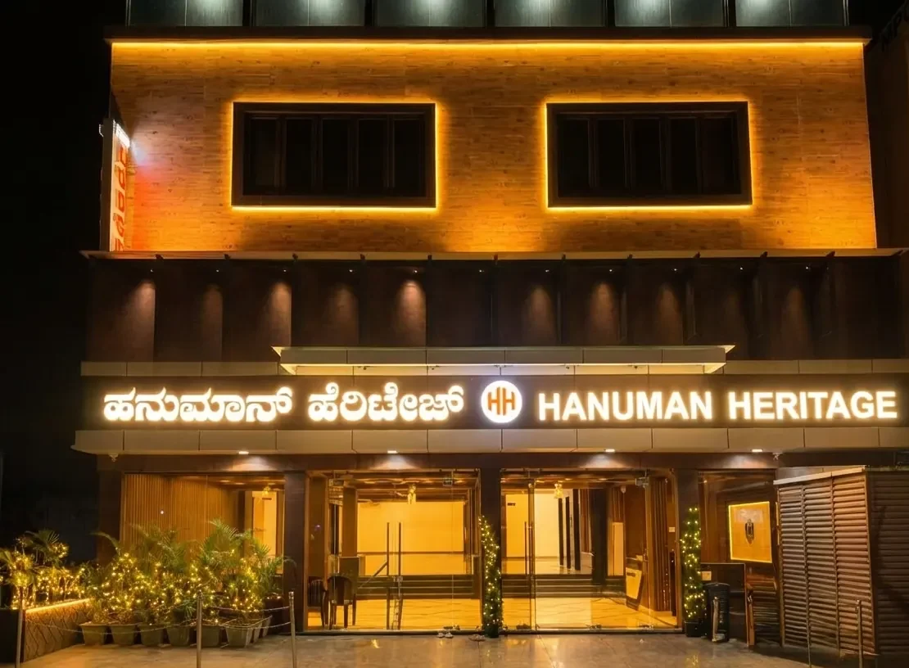
Come back from the hills to one of our 26 rooms, close to the roads out to Mullayanagiri and Baba Budangiri. Non-AC rooms ₹2,000, AC rooms ₹2,500, family rooms for 4 and 7 guests, all GST included, with lift, WiFi and TV in every room.
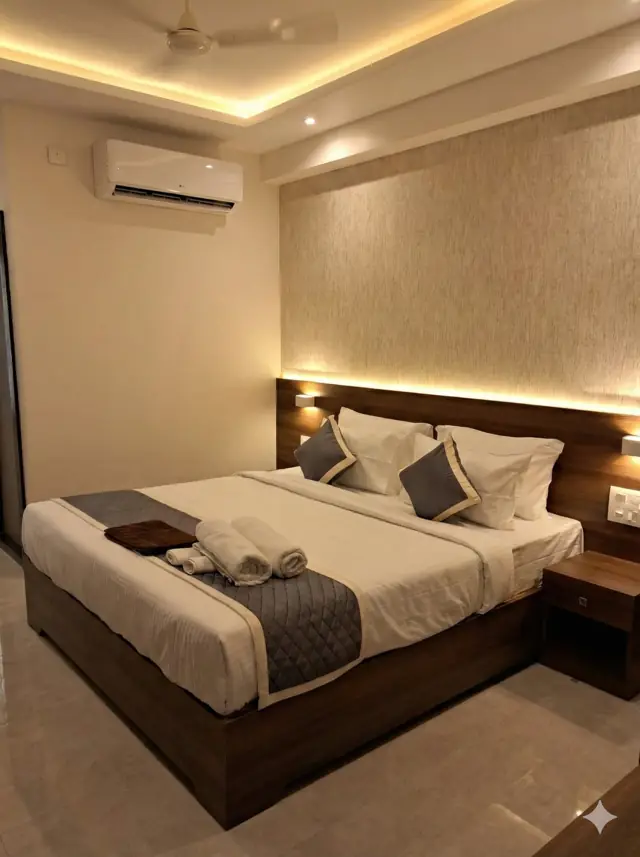
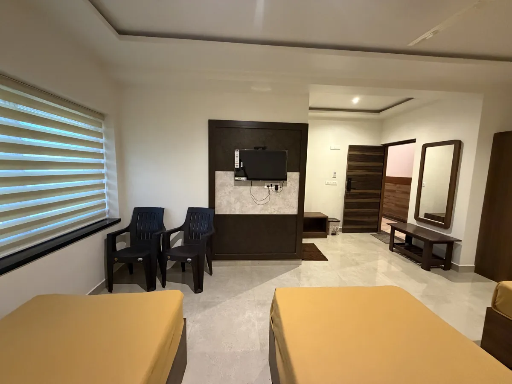
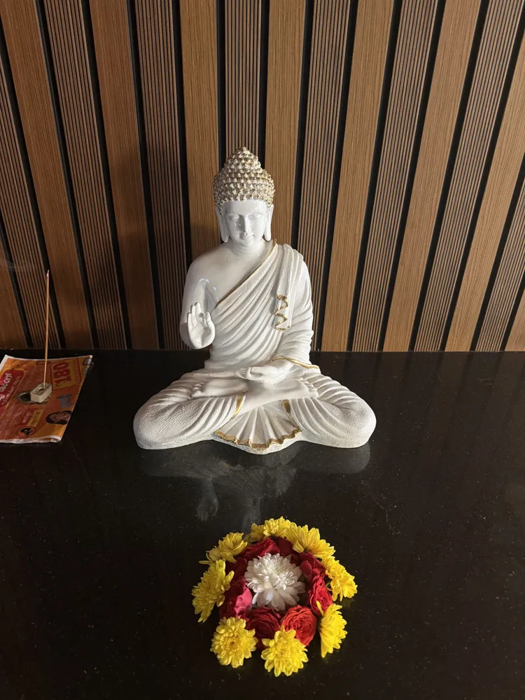
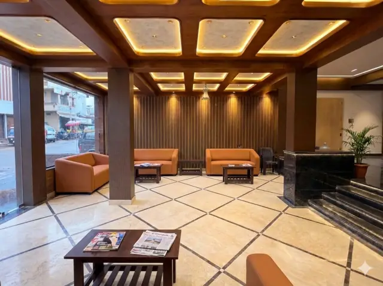
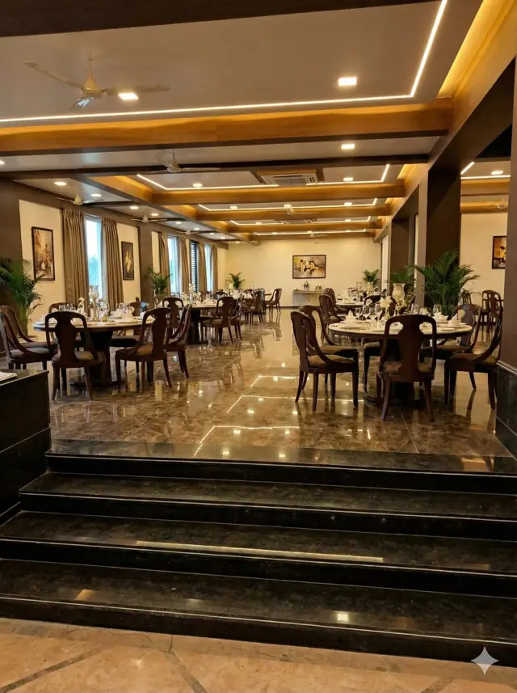
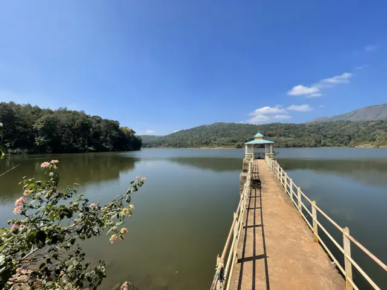
See rooms and book Ask us on WhatsApp
Sources
- Chikkamagaluru district tourism (Government of Karnataka)
- Chikkamagaluru district: places of interest
- Chikkamagaluru district: suggested itineraries
- Chikkamagaluru district: Sri Kshetra Horanadu
- Karnataka Tourism: top places to see in Chikkamagaluru
- Karnataka Tourism: Jhari Falls
- Karnataka Tourism: Kalasa
- Deccan Herald: online booking for Mullayyanagiri, Bababudangiri from Sept 1 (30 August 2025)